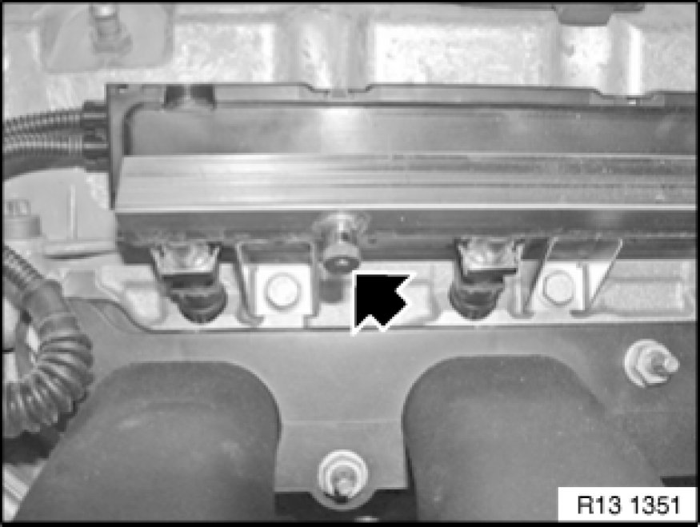
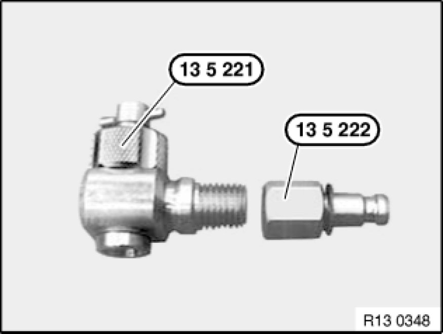
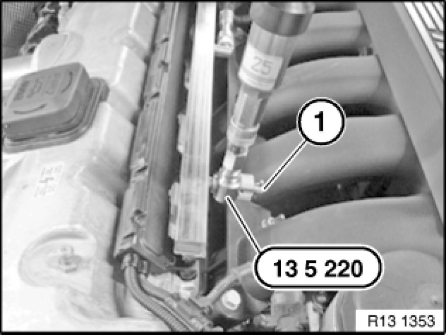

Checking Fuel Pump Delivery Pressure (N52)
13 31 029 - Checking fuel pump delivery pressure (N52)

Special tools required:
- 13 5 220
- 13 5 221
- 13 5 222

Important!
The fuel in the fuel lines is under pressure (approx. 5 bar)!
Catch and dispose of escaping fuel.

Necessary preliminary tasks:
- Switch off ignition.
- Remove acoustic cover Removing and Installing/Replacing Ignition Coil Cover

Remove dust cap (1).

Connect special tool kit 13 5 220 (comprising 13 5 221 and 13 5 222) to pressure sensor of DIS Tester.
Connect pressure sensor to DIS Tester.
Important!
Do not under any circumstances screw in the check valve up to the mechanical stop.
This could damage the valve in the pressure regulator housing.

Mount special tool kit 13 5 220 to injection tube and tighten knurled nut hand-tight.
Screw out check valve (1) so that valve in pressure regulator housing is closed.
Start engine.
Screw in check valve (1) until a pressure reading is indicated on DIS Tester.

Measuring fuel pressure.
- Select Measurement.
- Multimeter function appears
- Select Pressure test
- Read off value of fuel pressure.
Compare actual value of test pressure with specified value Technical Data.
Switch off engine.
Note:
Removing special tool kit 13 5 220:
- Switch off engine
- Screw out check valve fully again.
- Remove special tool kit 13 5 220 from pressure regulator housing.
- Catch and dispose of escaping fuel.
Note:
Read out fault memory of DME control unit.
Check stored fault messages.
Now clear the fault memory.